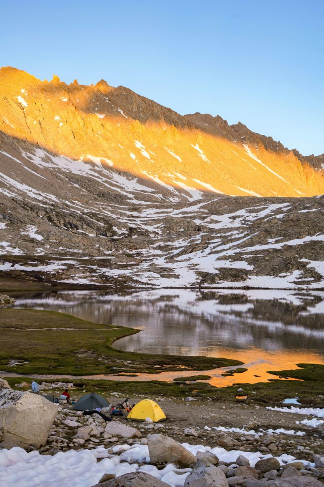

Camper en montagne est l'une des experiences les plus magiques que la nature puisse offrir. Le silence absolu, les nuits etoilees, l'air pur et les paysages grandioses vous feront oublier le quotidien. Mais cette aventure necessite une bonne preparation !
En altitude, l'emplacement est crucial. Il faut chercher un terrain plat, eloigne des zones inondables et protege du vent. Evitez les cretes exposees et preferez les cuvettes naturelles qui offrent une meilleure protection.
En montagne, la meteo peut changer tres rapidement. Consultez toujours les previsions meteo avant de partir et informez quelqu'un de votre itineraire. Emportez une trousse de premiers secours et un moyen de communication (telephone satellite ou balise GPS).
Respectez le principe du "Leave No Trace" : ne laissez aucune trace de votre passage. Emportez tous vos dechets, ne cueillez pas les plantes et restez sur les sentiers balises. La montagne nous appartient a tous, preservons-la ensemble !